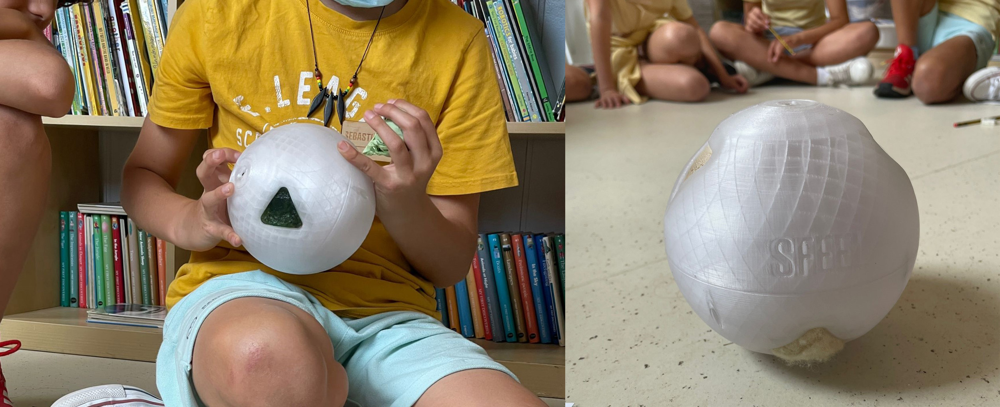

/MICROCHALLENGE_3
(06_may_2022)
You can check the whole project by tapping here: OVERLOAD.
For this third Microchallenge, I teamed up with Aparna and Nikita with the idea of creating something
in relation to social networks and how to represent the influence they have on us. The concepts to
take into consideration for the challenge were electronics regarding inputs and outputs, creating an
interface, networking and design ethics.
From the topic of social networks, we started thinking about how to visually and physically represent
how using all the typical apps affect us in our daily lives. We had to discuss this for a while since
every one of us had different views and thoughts regarding the topic: from being influenced by the
stereotypes shown in media, to the superficiality of what people show in media, to how the time we
spend on our mobile phones makes us feel attached and trapped sometimes.
We finally decided to create a representation that could show all these feelings, based on the
concept of an inflatable that could grow to represent all these thoughts that grow in our minds
when we use these kinds of apps. We thought of different shapes but in the end, we chose a neck
brace because we believed it was really explicit: something that inflates in the neck that chokes,
that restricts the movement of the head, that is attached to you like a chain. These are some
drawings of the concept and some references:


The concept was that people had to use an interface we created to share the time they had spent
on social networks and then the wearable neck brace inflated in relation to the time. The more
time, the more the neck brace would inflate and choke.
Here we divided the tasks and meanwhile Nikita was developing the communication of the project
and the code in P5, Aparna and I started prototyping the inflatable thanks to a project Dafni shared with us. We used organic trash bags and the laser cutter to seal the two layers and to cut
the external shape of the inflatable. We made many tests to adjust the settings of the laser:
Also, I prepared the whole electronic part and soldered some cables from the power source to the air pump and used a relay to make it able to communicate with the ESP32.
After this, we decided on the final form of the wearable and looked for a long tube to connect the inflatable to the air pump. We also designed a box for the electronics and then we already had the whole physical device fabricated and ready to use. This is how the wearable looked in the end:

On the other hand, we worked on the storytelling of the project, we called it Overload in relation to the huge amount of information we get from social networks and Nikita developed a website for the project that explained it well and also created a 3D environment to show how this wearable would look if everyone was wearing it on the streets.
This part was complementary to the physical device and gave the project a bit more background and meaning. It also further showed the concept we wanted to represent. You can access to the website HERE.
Finally, I also want to mention that this challenge has also a direct relation to my project in the sense that we feel physically more than we usually do. I'm focusing on wearables that can extend our perceptions, and this was a clear way to make us physically feel things that, in a normal situation, we wouldn't feel. Also, the fact of extending human capabilities, in this challenge turned into restricting human capabilities. Seeing it the other way around was at least fascinating.
